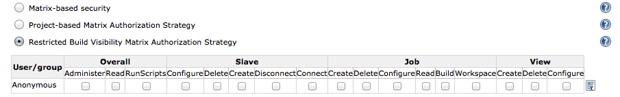
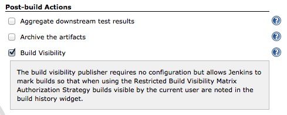
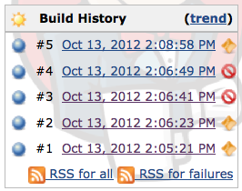

This plugin provides an authorization strategy that will restrict access to the details about a build based upon the following rules:
This plugin also contains a build visibility post build action which can be used to provide indicators in the build history widget indicating which builds a user has access to. Note that these indicators are not retroactive, they will only appear if the build visibility action was enabled in the configuration for a job at the time of the build.
The only required configuration is to select the Restricted Build Visibility Matrix Authorization Strategy for your Jenkins instance. It is recommended, however, that the Build Visibility post build action also be used in order to provide visual indicators to users about which build details they can see.
To use the restricted build history plugin after installation set the authorization strategy for you Jenkins server to Restricted Build Visibility Matrix Authorization Strategy. There are no explicit permissions to grant for controlling build visibility.
In order to see the visual indicators shown in the build history screenshot below, the build visibility post build action needs to be enabled for each job.Note that indicators are not retroactive.
In the screenshot below, the logged in user has access to the first two builds and the last build but does not have access to the third and fourth build.
